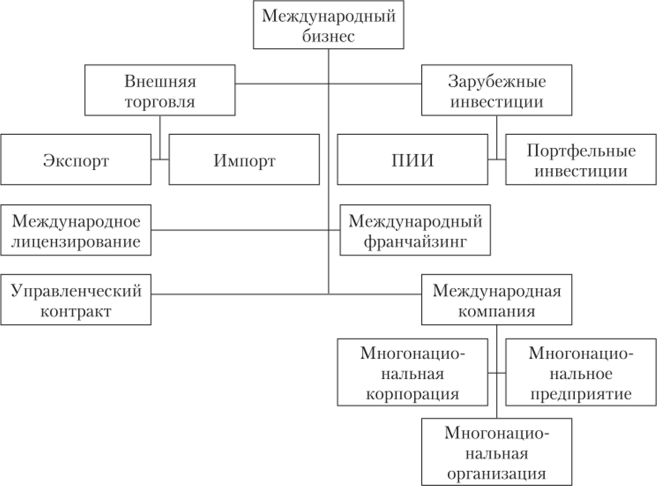

Международный бизнес и транснационализация производства

В самом общем виде под международным бизнесом понимается осуществление деловых операций между партнерами из более чем одной страны. Стороны, участвующие в таких сделках, могут быть представлены физическими лицами, отдельными компаниями, группами компаний или государственными организациями.
В настоящее время практически все крупные компании во всех странах мира вовлечены в процесс интернационализации и глобализации. Мелкие компании также все интенсивнее вовлекаются в сферу международного бизнеса.
Международный бизнес может принимать при этом различные формы: от элементарных импортно-экспортных операций до весьма существенных прямых иностранных инвестиций как портфельных, так и в реальные активы зарубежных государств.
Международный бизнес особенно активно развивается и растет в последние годы. Это происходит прежде всего из-за стратегических изменений в современных условиях ведения бизнеса. В их число входят: необходимость более широкого – в идеале международного – использования ключевых компетенций компаний, приобретение ресурсов на зарубежных рынках, поиск новых рынков сбыта готовой продукции, а также необходимость конкурировать более эффективно с учетом поведения всех конкурентов в соответствующей отрасли.
Ключевые термины:
формы и виды международного бизнеса, технологическая глобализация, кросс-культурный фактор международного бизнеса, прямые иностранные инвестиции как форма транснационализации бизнеса, уровень интернационализации, структура международного бизнеса, инжиниринг в международном бизнесе, консалтинг в международном бизнесе, основные причины транснационализации производства, индекс транснационализации, индекс распространения сети.
Структура международного бизнеса
С началом процесса экономической глобализации связана активизация международного бизнеса компаний.
■ Международный бизнес – это установление и развитие устойчивых, долговременных производственных, научно-технических, финансовых и коммерческих связей между предприятиями разных стран.
Для международного бизнеса, являющегося инструментом глобализации, в современных условиях характерно следующее:
Всеобщность и универсальность. Хотя международный бизнес и регулируется соответствующими законодательствами стран, он является неотъемлемой частью деятельности всех международных компаний.
Технологическая глобализация. Возможности компьютеризации, информатизации, а также телекоммуникаций принципиально изменили характер международного бизнеса, который в настоящее время всецело охватывает всю мировую систему информационного делового обмена, мировой финансовый рынок, глобальную структуру технологических нововведений и т.д.
Кросс-культурный фактор.Это совокупность требований и ограничений, накладываемых культурой конкретной страны на международные компании, которые ведут в ней свой бизнес.
Уровень интернационализации.Каждая международная компания имеет свой уровень интернационализации.
Уровень конкуренции. В частности, некоторые международные компании могут иметь поддержку своего государства в борьбе с конкурентами.

Основными факторами, влияющими на выбор форм деятельности на международных рынках, являются:
– правовые аспекты ведения бизнеса, предусматривающие прямое или косвенное запрещение правительством страны некоторых форм деятельности международных компаний;
– величина издержек международной компании;
– уровень конкуренции и риска, определяющих свободу выбора форм международного бизнеса, а также защищенность активов и доходов международной компании.